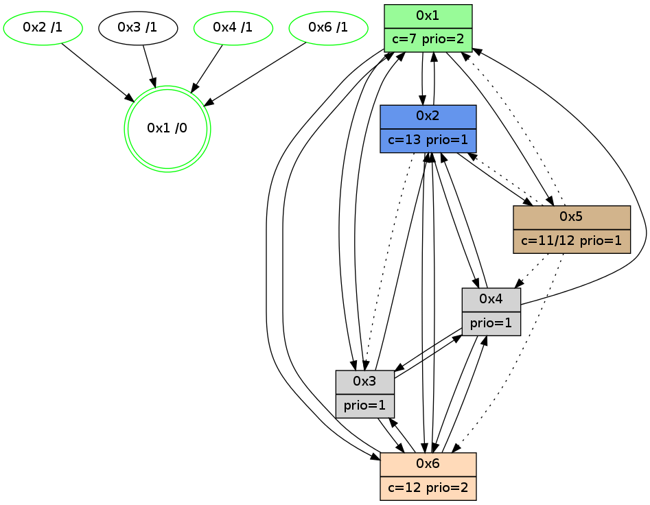

>> << IDX [start] -100 -25 -5 +0 +5 +25 +100 [1045.38743305]
 Previous packets
1040.004206 beacon03(adaf) #0 coord=01,02,05,03,04,06 cycle=432.0ms assoc 64 cc 9b
1040.014205 beacon04(adaf) #0 coord=01,02,05,03,04,06 cycle=432.0ms assoc 64 6a b1
1040.024207 beacon06(adaf) #0 coord=01,02,05,03,04,06 cycle=432.0ms assoc 64 1e ad
1040.036513 [Color(3) seq=175 @0:0 prio=1 c=7,c,d;1,4,6,8,9,b,e]
1040.038716 [STC(1) #0.163 new-neigh,tree-change,inconsistent-stability,stable,to-color d=0]
1040.040370 [Hello(4): seq=847 sym=1,6 asym=3 sysInfo=hasWarning stat=1:15,9,8,0/6:7,11,12,5/3:7,8,4,1]
1040.042362 [Color(2) seq=233 @0:0 color=13 prio=1 c=7,c,e;1,4,6,8,9,b]
1040.043982 [Color(1) seq=273 @0:0 color=7 prio=2 c=1,4,6,8,9,b,c,d;0,2,3,5,a,e]
1040.047741 [Color(4) seq=128 @0:0 prio=1 c=7,c;1,4,6,8,9,b,d,e]
----------------------------------------------------------------------
1040.466353 beacon01(adaf) #0 coord=01,02,05,03,04,06 cycle=432.0ms assoc
-- color-indic=1 64 eb da
1040.476314 beacon02(adaf) #0 coord=01,02,05,03,04,06 cycle=432.0ms assoc 64 ba 25
1040.486314 beacon05(adaf) #0 coord=01,02,05,03,04,06 cycle=432.0ms assoc 64 1c 0f
1040.496314 beacon03(adaf) #0 coord=01,02,05,03,04,06 cycle=432.0ms assoc 64 80 2b
1040.506315 beacon04(adaf) #0 coord=01,02,05,03,04,06 cycle=432.0ms assoc 64 26 01
1040.516314 beacon06(adaf) #0 coord=01,02,05,03,04,06 cycle=432.0ms assoc 64 52 1d
1040.528100 [Hello(2): seq=1335 sym=5,6,1 asym=4 sysInfo=hasWarning stat=5:0,0,0,0/6:4,0,0,3/1:3,1,11,0/4:4,1,2,1]
1040.530845 [Hello(6): seq=760 sym=4,1,3 sysInfo=hasWarning stat=4:9,1,7,1/1:6,9,2,1/3:0,1,8,8]
1040.533880 [STC(6)->1 #0.163 new-neigh,tree-change,inconsistent-stability,stable,to-color d=1]
1040.537130 [Color(6) seq=232 @0:0 color=12 prio=2 c=7,d,e;1,4,6,8,9,b]
1040.540566 [Hello(1): seq=747 sym=2,4,6,5 sysInfo=hasWarning,coloring-mode-on,ColoringModeRequestCalled stat=2:6,10,11,3/4:13,1,9,1/6:7,4,3,4/5:0,0,0,0]
1040.543500 [Hello(3): seq=845 sym=6,1,4 sysInfo=hasWarning stat=6:0,0,7,3/1:13,7,2,1/4:0,1,0,0]
1040.546200 [STC(3)->1 #0.163 new-neigh,tree-change,inconsistent-stability,stable,to-color d=1]
1040.550071 [TreeStatus(3)-.->1 #0.163 new-neigh,tree-change,inconsistent-stability,stable child=1]
----------------------------------------------------------------------
1040.958460 beacon01(adaf) #0 coord=01,02,05,03,04,06 cycle=432.0ms assoc
-- color-indic=1 64 2f b5
1040.968421 beacon02(adaf) #0 coord=01,02,05,03,04,06 cycle=432.0ms assoc 64 7e 4a
1040.978421 beacon05(adaf) #0 coord=01,02,05,03,04,06 cycle=432.0ms assoc 64 d8 60
1040.988421 beacon03(adaf) #0 coord=01,02,05,03,04,06 cycle=432.0ms assoc 64 44 44
1041.008422 beacon06(adaf) #0 coord=01,02,05,03,04,06 cycle=432.0ms assoc 64 96 72
1041.020687 [Color(3) seq=176 @0:0 prio=1 c=7,c,d;1,4,6,8,9,b,e]
1041.022347 [Color(1) seq=274 @0:0 color=7 prio=2 c=1,4,6,8,9,b,c,d;0,2,3,5,a,e]
1041.024846 [Color(2) seq=234 @0:0 color=13 prio=1 c=7,c,e;1,4,6,8,9,b]
----------------------------------------------------------------------
1041.450569 beacon01(adaf) #0 coord=01,02,05,03,04,06 cycle=432.0ms assoc
-- color-indic=1 64 0a 88
1041.460530 beacon02(adaf) #0 coord=01,02,05,03,04,06 cycle=432.0ms assoc 64 5b 77
1041.470530 beacon05(adaf) #0 coord=01,02,05,03,04,06 cycle=432.0ms assoc 64 fd 5d
1041.480531 beacon03(adaf) #0 coord=01,02,05,03,04,06 cycle=432.0ms assoc 64 61 79
1041.490531 beacon04(adaf) #0 coord=01,02,05,03,04,06 cycle=432.0ms assoc 64 c7 53
1041.500532 beacon06(adaf) #0 coord=01,02,05,03,04,06 cycle=432.0ms assoc 64 b3 4f
1041.514923 [Hello(6): seq=761 sym=4,2,1,3 sysInfo=hasWarning stat=4:9,1,7,1/2:0,1,0,0/1:7,10,2,1/3:1,2,9,9]
1041.516691 PARSE ERROR************************
Traceback (most recent call last):
File "PacketAnalysis.py", line 167, in showOperaPacket
structPacket = OperaPacketParse.parsePacket(rawPacket)
File "../../pkg-python/HipSens/Core/OperaPacketParse.py", line 461, in parsePacket
return parseHelloMessage(data)
File "../../pkg-python/HipSens/Core/OperaPacketParse.py", line 109, in parseHelloMessage
sysInfo,stability,colorInfo = struct.unpack("!HBB", linkList[0:4])
error: unpack requires a string argument of length 4
48 20 04 00 03 50 00 02 02 08 02 00 01 00 06 00 03 00 53 04 00 02 00 00 4c 08 00 10 08 a0 5d c8 25 98 53 1b
1041.519678 [Color(6) seq=233 @0:0 color=12 prio=2 c=7,d,e;1,4,6,8,9,b]
1041.523976 [Hello(1): seq=748 sym=2,4,6,5,3 sysInfo=hasWarning,coloring-mode-on,ColoringModeRequestCalled stat=2:6,11,11,3/4:13,1,9,1/6:7,4,3,4/5:0,0,0,0/3:0,0,1,1]
1041.530002 [Color(4) seq=129 @0:0 prio=1 c=7,c;1,4,6,8,9,b,d,e]
----------------------------------------------------------------------
1041.942676 beacon01(adaf) #0 coord=01,02,05,03,04,06 cycle=432.0ms assoc
-- color-indic=1 64 ce e7
1041.952637 beacon02(adaf) #0 coord=01,02,05,03,04,06 cycle=432.0ms assoc 64 9f 18
1041.962638 beacon05(adaf) #0 coord=01,02,05,03,04,06 cycle=432.0ms assoc 64 39 32
1041.972637 beacon03(adaf) #0 coord=01,02,05,03,04,06 cycle=432.0ms assoc 64 a5 16
1041.982638 beacon04(adaf) #0 coord=01,02,05,03,04,06 cycle=432.0ms assoc 64 03 3c
1041.992639 beacon06(adaf) #0 coord=01,02,05,03,04,06 cycle=432.0ms assoc 64 77 20
1042.004906 [Color(3) seq=177 @0:0 prio=1 c=7,c,d;1,4,6,8,9,b,e]
1042.006687 [Color(1) seq=275 @0:0 color=7 prio=2 c=1,4,6,8,9,b,c,d;0,2,3,5,a,e]
1042.009067 [Color(2) seq=235 @0:0 color=13 prio=1 c=7,c,e;1,4,6,8,9,b]
----------------------------------------------------------------------
1042.434785 beacon01(adaf) #0 coord=01,02,05,03,04,06 cycle=432.0ms assoc
-- color-indic=1 64 82 57
1042.444745 beacon02(adaf) #0 coord=01,02,05,03,04,06 cycle=432.0ms assoc 64 d3 a8
1042.454745 beacon05(adaf) #0 coord=01,02,05,03,04,06 cycle=432.0ms assoc 64 75 82
1042.464747 beacon03(adaf) #0 coord=01,02,05,03,04,06 cycle=432.0ms assoc 64 e9 a6
1042.474746 beacon04(adaf) #0 coord=01,02,05,03,04,06 cycle=432.0ms assoc 64 4f 8c
1042.484747 beacon06(adaf) #0 coord=01,02,05,03,04,06 cycle=432.0ms assoc 64 3b 90
1042.496246 [Hello(1): seq=749 sym=4,6,5,3 sysInfo=hasWarning,coloring-mode-on,ColoringModeRequestCalled stat=4:13,2,9,1/6:7,4,3,4/5:0,0,0,0/3:0,0,1,1]
1042.498925 [Hello(6): seq=762 sym=4,2,1,3 sysInfo=hasWarning stat=4:10,2,7,1/2:0,2,0,0/1:8,11,2,1/3:2,3,9,9]
1042.500884 [Hello(4): seq=849 sym=2,1,6,3 sysInfo=hasWarning stat=2:0,2,0,0/1:0,11,8,0/6:8,12,13,5/3:8,10,5,2]
1042.503824 [Color(6) seq=234 @0:0 color=12 prio=2 c=7,d,e;1,4,6,8,9,b]
1042.505502 [Hello(3): seq=847 sym=6,1,4 sysInfo=hasWarning stat=6:1,1,7,3/1:14,9,2,1/4:1,2,0,0]
1042.508302 [Color(4) seq=130 @0:0 prio=1 c=7,c;1,4,6,8,9,b,d,e]
1042.511488 [Hello(2): seq=1337 sym=5,6,1,4 asym=3 sysInfo=hasWarning stat=5:0,0,0,0/6:6,2,1,3/1:5,1,11,0/4:5,2,2,1/3:0,0,1,1]
1042.514503 [STC(1) #0.164 new-neigh,tree-change,inconsistent-stability,stable,to-color d=0]
----------------------------------------------------------------------
1042.926892 beacon01(adaf) #0 coord=01,02,05,03,04,06 cycle=432.0ms assoc
-- color-indic=1 64 46 38
1042.936853 beacon02(adaf) #0 coord=01,02,05,03,04,06 cycle=432.0ms assoc 64 17 c7
1042.946854 beacon05(adaf) #0 coord=01,02,05,03,04,06 cycle=432.0ms assoc 64 b1 ed
1042.956854 beacon03(adaf) #0 coord=01,02,05,03,04,06 cycle=432.0ms assoc 64 2d c9
1042.966853 beacon04(adaf) #0 coord=01,02,05,03,04,06 cycle=432.0ms assoc 64 8b e3
1042.976855 beacon06(adaf) #0 coord=01,02,05,03,04,06 cycle=432.0ms assoc 64 ff ff
1042.988401 [STC(3)->1 #0.164 to-color d=1]
1042.990163 [Color(1) seq=276 @0:0 color=7 prio=2 c=1,4,6,8,9,b,c,d;0,2,3,5,a,e]
1042.992120 [STC(4)->1 #0.164 new-neigh,tree-change,inconsistent-stability,stable,to-color d=1]
1042.994140 [STC(2)->1 #0.164 new-neigh,tree-change,inconsistent-stability,stable,to-color d=1]
1042.997368 [Color(2) seq=236 @0:0 color=13 prio=1 c=7,c,e;1,4,6,8,9,b]
----------------------------------------------------------------------
1043.419002 beacon01(adaf) #0 coord=01,02,05,03,04,06 cycle=432.0ms assoc
-- color-indic=1 64 0b 3f
1043.428963 beacon02(adaf) #0 coord=01,02,05,03,04,06 cycle=432.0ms assoc 64 5a c0
1043.438964 beacon05(adaf) #0 coord=01,02,05,03,04,06 cycle=432.0ms assoc 64 fc ea
1043.448964 beacon03(adaf) #0 coord=01,02,05,03,04,06 cycle=432.0ms assoc 64 60 ce
1043.458963 beacon04(adaf) #0 coord=01,02,05,03,04,06 cycle=432.0ms assoc 64 c6 e4
1043.468964 beacon06(adaf) #0 coord=01,02,05,03,04,06 cycle=432.0ms assoc 64 b2 f8
1043.480198 [Hello(1): seq=750 sym=6,5,3 sysInfo=hasWarning,coloring-mode-on,ColoringModeRequestCalled stat=6:7,4,4,4/5:0,0,0,0/3:0,0,2,1]
1043.482772 [Hello(4): seq=850 sym=2,1,6,3 sysInfo=hasWarning stat=2:1,3,1,0/1:0,11,9,0/6:8,12,13,5/3:8,10,5,2]
1043.485920 [Color(4) seq=131 @0:0 prio=1 c=7,c;1,4,6,8,9,b,d,e]
1043.489702 [Hello(3): seq=848 sym=6,2,1,4 sysInfo=hasWarning stat=6:1,1,8,3/2:0,1,1,0/1:14,10,3,1/4:1,3,0,0]
1043.495692 [Hello(2): seq=1338 sym=5,6,1,4 asym=3 sysInfo=hasWarning stat=5:0,0,0,0/6:6,2,1,3/1:5,1,12,0/4:5,2,2,1/3:0,0,2,1]
----------------------------------------------------------------------
1043.911109 beacon01(adaf) #0 coord=01,02,05,03,04,06 cycle=432.0ms assoc
-- color-indic=1 64 cf 50
1043.921071 beacon02(adaf) #0 coord=01,02,05,03,04,06 cycle=432.0ms assoc 64 9e af
1043.931071 beacon05(adaf) #0 coord=01,02,05,03,04,06 cycle=432.0ms assoc 64 38 85
1043.941070 beacon03(adaf) #0 coord=01,02,05,03,04,06 cycle=432.0ms assoc 64 a4 a1
1043.951070 beacon04(adaf) #0 coord=01,02,05,03,04,06 cycle=432.0ms assoc 64 02 8b
1043.961071 beacon06(adaf) #0 coord=01,02,05,03,04,06 cycle=432.0ms assoc 64 76 97
1043.973842 [Color(2) seq=237 @0:0 color=13 prio=1 c=7,c,e;1,4,6,8,9,b]
1043.978011 [Color(1) seq=277 @0:0 color=7 prio=2 c=1,4,6,8,9,b,c,d;0,2,3,5,a,e]
----------------------------------------------------------------------
1044.403217 beacon01(adaf) #0 coord=01,02,05,03,04,06 cycle=432.0ms assoc
-- color-indic=1 64 83 e0
1044.413177 beacon02(adaf) #0 coord=01,02,05,03,04,06 cycle=432.0ms assoc 64 d2 1f
1044.423178 beacon05(adaf) #0 coord=01,02,05,03,04,06 cycle=432.0ms assoc 64 74 35
1044.433177 beacon03(adaf) #0 coord=01,02,05,03,04,06 cycle=432.0ms assoc 64 e8 11
1044.443178 beacon04(adaf) #0 coord=01,02,05,03,04,06 cycle=432.0ms assoc 64 4e 3b
1044.453179 beacon06(adaf) #0 coord=01,02,05,03,04,06 cycle=432.0ms assoc 64 3a 27
1044.464375 [Hello(1): seq=751 sym=2,6,5,3 sysInfo=hasWarning,coloring-mode-on,ColoringModeRequestCalled stat=2:0,0,0,0/6:8,5,4,4/5:0,0,0,0/3:1,0,2,1]
1044.467052 [Hello(4): seq=851 sym=2,1,6,3 sysInfo=hasWarning stat=2:2,4,1,0/1:1,12,9,0/6:8,12,13,5/3:9,10,5,2]
1044.470208 [Color(4) seq=132 @0:0 prio=1 c=7,c;1,4,6,8,9,b,d,e]
1044.473934 [Hello(3): seq=849 sym=6,2,1,4 sysInfo=hasWarning stat=6:1,1,8,3/2:1,2,1,0/1:14,11,3,1/4:1,3,0,0]
1044.479918 [Hello(2): seq=1339 sym=5,6,1,4 asym=3 sysInfo=hasWarning stat=5:0,0,0,0/6:6,2,1,3/1:5,2,12,0/4:5,2,2,1/3:0,0,2,1]
----------------------------------------------------------------------
1044.895324 beacon01(adaf) #0 coord=01,02,05,03,04,06 cycle=432.0ms assoc
-- color-indic=1 64 47 8f
1044.905285 beacon02(adaf) #0 coord=01,02,05,03,04,06 cycle=432.0ms assoc 64 16 70
1044.915285 beacon05(adaf) #0 coord=01,02,05,03,04,06 cycle=432.0ms assoc 64 b0 5a
1044.925286 beacon03(adaf) #0 coord=01,02,05,03,04,06 cycle=432.0ms assoc 64 2c 7e
1044.935288 beacon04(adaf) #0 coord=01,02,05,03,04,06 cycle=432.0ms assoc 64 8a 54
1044.945287 beacon06(adaf) #0 coord=01,02,05,03,04,06 cycle=432.0ms assoc 64 fe 48
1044.958064 [Color(2) seq=238 @0:0 color=13 prio=1 c=7,c,e;1,4,6,8,9,b]
1044.962178 [STC(1) #0.165 new-neigh,tree-change,inconsistent-stability,stable,to-color d=0]
1044.965738 [Color(1) seq=278 @0:0 color=7 prio=2 c=1,4,6,8,9,b,c,d;0,2,3,5,a,e]